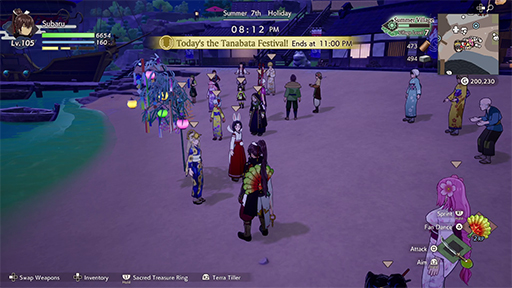
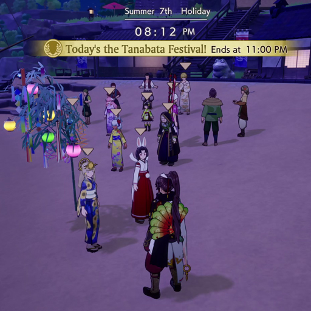
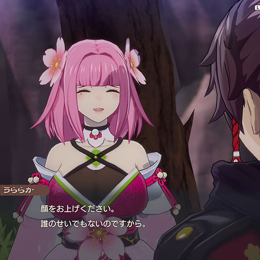
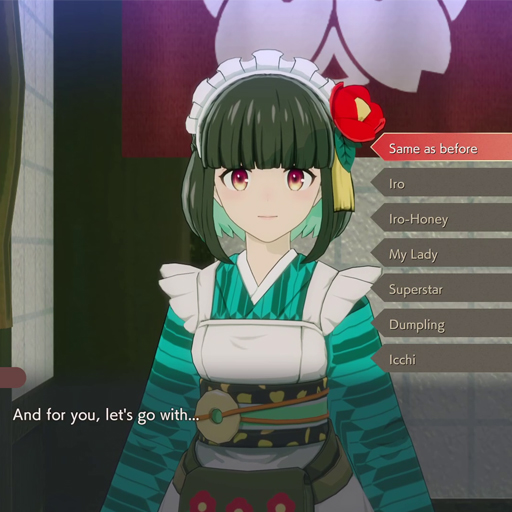
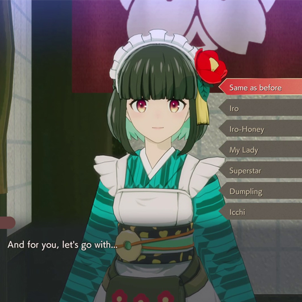
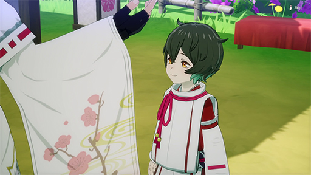
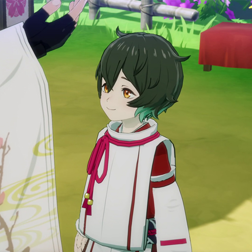

-
Festivals
 Festivals, which take place on specific dates, give you and the villagers a chance to participate in unique events with special outfits.
-
Bonding Quests
Bonding Quests unlock after you have a high enough Bond Level with a villager. These give you a chance to know them even better. If you grow especially close, you can even ask them to be your boyfriend or girlfriend.
-
Special Events
 

After starting a relationship with someone, you can go out on dates and even choose special nicknames for each other.
-
Marriage
When you share a deep and loving bond with your partner, you can ask for their hand in marriage. However, you must obtain a special item before you can pop the question.
-
Children
 Once you've spent enough time together as a married couple, your partner may ask if you'd like to welcome a new family member. You can have up to two children.